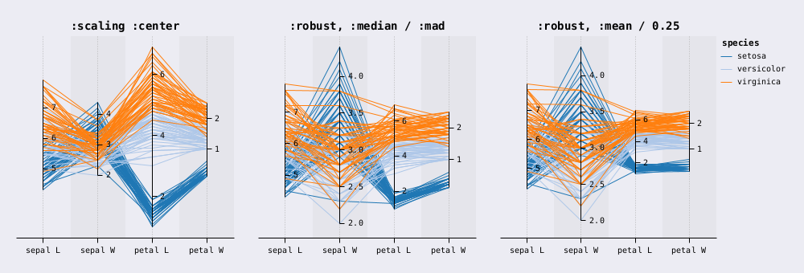
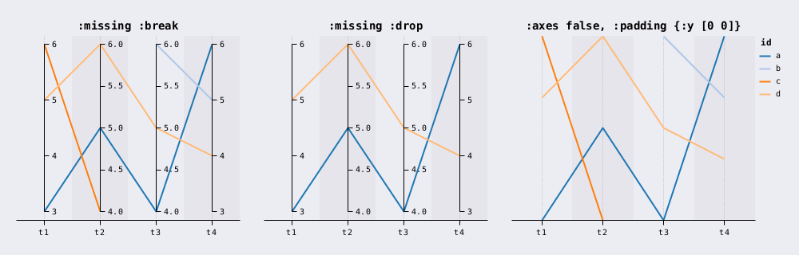
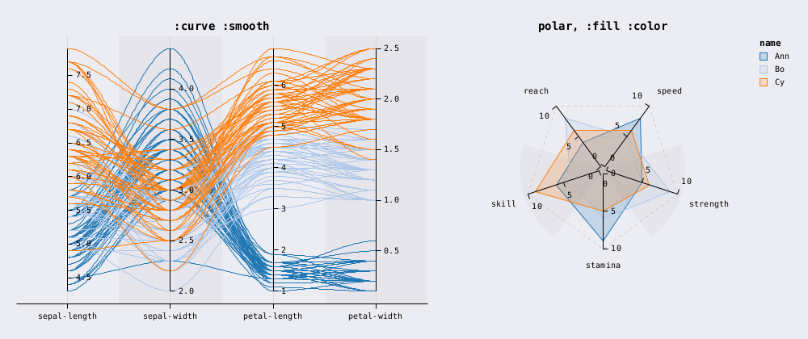
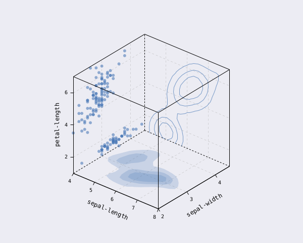
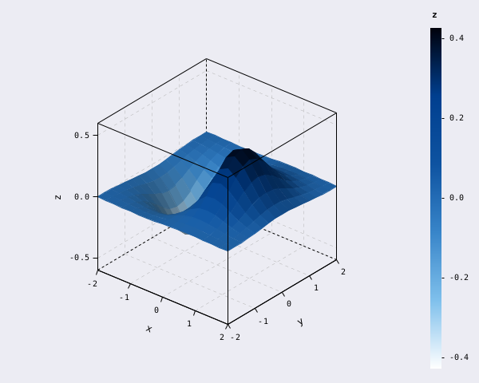
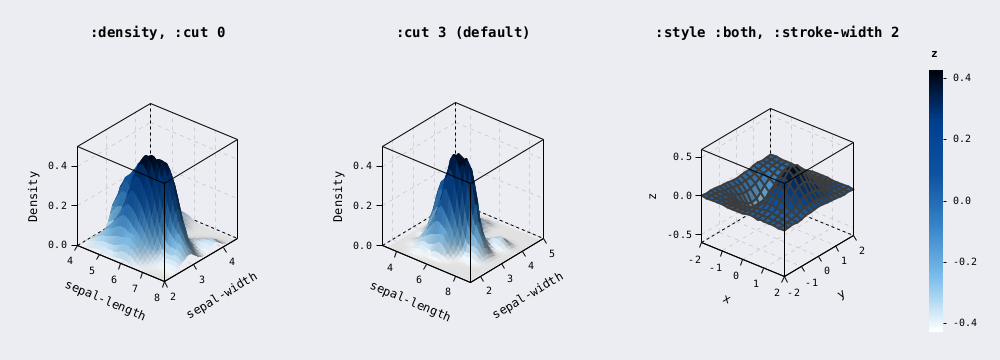
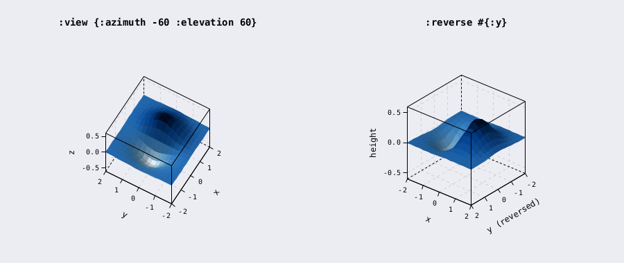

21 Charts: multivariate and 3D
Many variables at once: a line per row across one axis per variable (parallel, a radar in polar coordinates), points in a 3D box (cloud) and surfaces over a grid (surface). Each chart lists the mapping keys it reads, its own options and the shared option groups it takes (documented once in the Shared options chapter).
(ns reference.charts-multivariate-3d
(:require [cljplot2.chart :as chart]
[cljplot2.core :as plot]
[cljplot2.describe :as describe]
[notebook-utils :as nu]))Data: Edgar Anderson’s iris measurements, R datasets package iris (Anderson 1935; Fisher 1936); licence: Part of R (GPL-2 | GPL-3).
(def iris (nu/dataset :iris))| sepal-length | sepal-width | petal-length | petal-width | species |
|---|---|---|---|---|
| 5.1 | 3.5 | 1.4 | 0.2 | setosa |
| 4.9 | 3 | 1.4 | 0.2 | setosa |
| 4.7 | 3.2 | 1.3 | 0.2 | setosa |
| 4.6 | 3.1 | 1.5 | 0.2 | setosa |
| 5 | 3.6 | 1.4 | 0.2 | setosa |
| 5.4 | 3.9 | 1.7 | 0.4 | setosa |
| 4.6 | 3.4 | 1.4 | 0.3 | setosa |
| 5 | 3.4 | 1.5 | 0.2 | setosa |
| 4.4 | 2.9 | 1.4 | 0.2 | setosa |
| 4.9 | 3.1 | 1.5 | 0.1 | setosa |
| 5.4 | 3.7 | 1.5 | 0.2 | setosa |
| 4.8 | 3.4 | 1.6 | 0.2 | setosa |
| 4.8 | 3 | 1.4 | 0.1 | setosa |
| 4.3 | 3 | 1.1 | 0.1 | setosa |
| 5.8 | 4 | 1.2 | 0.2 | setosa |
| 5.7 | 4.4 | 1.5 | 0.4 | setosa |
| 5.4 | 3.9 | 1.3 | 0.4 | setosa |
| 5.1 | 3.5 | 1.4 | 0.3 | setosa |
| 5.7 | 3.8 | 1.7 | 0.3 | setosa |
| 5.1 | 3.8 | 1.5 | 0.3 | setosa |
| 5.4 | 3.4 | 1.7 | 0.2 | setosa |
| 5.1 | 3.7 | 1.5 | 0.4 | setosa |
| 4.6 | 3.6 | 1 | 0.2 | setosa |
| 5.1 | 3.3 | 1.7 | 0.5 | setosa |
| 4.8 | 3.4 | 1.9 | 0.2 | setosa |
| 5 | 3 | 1.6 | 0.2 | setosa |
| 5 | 3.4 | 1.6 | 0.4 | setosa |
| 5.2 | 3.5 | 1.5 | 0.2 | setosa |
| 5.2 | 3.4 | 1.4 | 0.2 | setosa |
| 4.7 | 3.2 | 1.6 | 0.2 | setosa |
| 4.8 | 3.1 | 1.6 | 0.2 | setosa |
| 5.4 | 3.4 | 1.5 | 0.4 | setosa |
| 5.2 | 4.1 | 1.5 | 0.1 | setosa |
| 5.5 | 4.2 | 1.4 | 0.2 | setosa |
| 4.9 | 3.1 | 1.5 | 0.2 | setosa |
| 5 | 3.2 | 1.2 | 0.2 | setosa |
| 5.5 | 3.5 | 1.3 | 0.2 | setosa |
| 4.9 | 3.6 | 1.4 | 0.1 | setosa |
| 4.4 | 3 | 1.3 | 0.2 | setosa |
| 5.1 | 3.4 | 1.5 | 0.2 | setosa |
| 5 | 3.5 | 1.3 | 0.3 | setosa |
| 4.5 | 2.3 | 1.3 | 0.3 | setosa |
| 4.4 | 3.2 | 1.3 | 0.2 | setosa |
| 5 | 3.5 | 1.6 | 0.6 | setosa |
| 5.1 | 3.8 | 1.9 | 0.4 | setosa |
| 4.8 | 3 | 1.4 | 0.3 | setosa |
| 5.1 | 3.8 | 1.6 | 0.2 | setosa |
| 4.6 | 3.2 | 1.4 | 0.2 | setosa |
| 5.3 | 3.7 | 1.5 | 0.2 | setosa |
| 5 | 3.3 | 1.4 | 0.2 | setosa |
| 7 | 3.2 | 4.7 | 1.4 | versicolor |
| 6.4 | 3.2 | 4.5 | 1.5 | versicolor |
| 6.9 | 3.1 | 4.9 | 1.5 | versicolor |
| 5.5 | 2.3 | 4 | 1.3 | versicolor |
| 6.5 | 2.8 | 4.6 | 1.5 | versicolor |
| 5.7 | 2.8 | 4.5 | 1.3 | versicolor |
| 6.3 | 3.3 | 4.7 | 1.6 | versicolor |
| 4.9 | 2.4 | 3.3 | 1 | versicolor |
| 6.6 | 2.9 | 4.6 | 1.3 | versicolor |
| 5.2 | 2.7 | 3.9 | 1.4 | versicolor |
| 5 | 2 | 3.5 | 1 | versicolor |
| 5.9 | 3 | 4.2 | 1.5 | versicolor |
| 6 | 2.2 | 4 | 1 | versicolor |
| 6.1 | 2.9 | 4.7 | 1.4 | versicolor |
| 5.6 | 2.9 | 3.6 | 1.3 | versicolor |
| 6.7 | 3.1 | 4.4 | 1.4 | versicolor |
| 5.6 | 3 | 4.5 | 1.5 | versicolor |
| 5.8 | 2.7 | 4.1 | 1 | versicolor |
| 6.2 | 2.2 | 4.5 | 1.5 | versicolor |
| 5.6 | 2.5 | 3.9 | 1.1 | versicolor |
| 5.9 | 3.2 | 4.8 | 1.8 | versicolor |
| 6.1 | 2.8 | 4 | 1.3 | versicolor |
| 6.3 | 2.5 | 4.9 | 1.5 | versicolor |
| 6.1 | 2.8 | 4.7 | 1.2 | versicolor |
| 6.4 | 2.9 | 4.3 | 1.3 | versicolor |
| 6.6 | 3 | 4.4 | 1.4 | versicolor |
| 6.8 | 2.8 | 4.8 | 1.4 | versicolor |
| 6.7 | 3 | 5 | 1.7 | versicolor |
| 6 | 2.9 | 4.5 | 1.5 | versicolor |
| 5.7 | 2.6 | 3.5 | 1 | versicolor |
| 5.5 | 2.4 | 3.8 | 1.1 | versicolor |
| 5.5 | 2.4 | 3.7 | 1 | versicolor |
| 5.8 | 2.7 | 3.9 | 1.2 | versicolor |
| 6 | 2.7 | 5.1 | 1.6 | versicolor |
| 5.4 | 3 | 4.5 | 1.5 | versicolor |
| 6 | 3.4 | 4.5 | 1.6 | versicolor |
| 6.7 | 3.1 | 4.7 | 1.5 | versicolor |
| 6.3 | 2.3 | 4.4 | 1.3 | versicolor |
| 5.6 | 3 | 4.1 | 1.3 | versicolor |
| 5.5 | 2.5 | 4 | 1.3 | versicolor |
| 5.5 | 2.6 | 4.4 | 1.2 | versicolor |
| 6.1 | 3 | 4.6 | 1.4 | versicolor |
| 5.8 | 2.6 | 4 | 1.2 | versicolor |
| 5 | 2.3 | 3.3 | 1 | versicolor |
| 5.6 | 2.7 | 4.2 | 1.3 | versicolor |
| 5.7 | 3 | 4.2 | 1.2 | versicolor |
| 5.7 | 2.9 | 4.2 | 1.3 | versicolor |
| 6.2 | 2.9 | 4.3 | 1.3 | versicolor |
| 5.1 | 2.5 | 3 | 1.1 | versicolor |
| 5.7 | 2.8 | 4.1 | 1.3 | versicolor |
| … | … | … | … | … |
Data: Earthquakes off Fiji since 1964, R datasets package quakes (Harvard PRIM-H project); licence: Part of R (GPL-2 | GPL-3).
(def quakes (nu/dataset :quakes))| lat | long | depth | mag | stations |
|---|---|---|---|---|
| -20.42 | 181.62 | 562 | 4.8 | 41 |
| -20.62 | 181.03 | 650 | 4.2 | 15 |
| -26 | 184.1 | 42 | 5.4 | 43 |
| -17.97 | 181.66 | 626 | 4.1 | 19 |
| -20.42 | 181.96 | 649 | 4 | 11 |
| -19.68 | 184.31 | 195 | 4 | 12 |
| -11.7 | 166.1 | 82 | 4.8 | 43 |
| -28.11 | 181.93 | 194 | 4.4 | 15 |
| -28.74 | 181.74 | 211 | 4.7 | 35 |
| -17.47 | 179.59 | 622 | 4.3 | 19 |
| -21.44 | 180.69 | 583 | 4.4 | 13 |
| -12.26 | 167 | 249 | 4.6 | 16 |
| -18.54 | 182.11 | 554 | 4.4 | 19 |
| -21 | 181.66 | 600 | 4.4 | 10 |
| -20.7 | 169.92 | 139 | 6.1 | 94 |
| -15.94 | 184.95 | 306 | 4.3 | 11 |
| -13.64 | 165.96 | 50 | 6 | 83 |
| -17.83 | 181.5 | 590 | 4.5 | 21 |
| -23.5 | 179.78 | 570 | 4.4 | 13 |
| -22.63 | 180.31 | 598 | 4.4 | 18 |
| -20.84 | 181.16 | 576 | 4.5 | 17 |
| -10.98 | 166.32 | 211 | 4.2 | 12 |
| -23.3 | 180.16 | 512 | 4.4 | 18 |
| -30.2 | 182 | 125 | 4.7 | 22 |
| -19.66 | 180.28 | 431 | 5.4 | 57 |
| -17.94 | 181.49 | 537 | 4 | 15 |
| -14.72 | 167.51 | 155 | 4.6 | 18 |
| -16.46 | 180.79 | 498 | 5.2 | 79 |
| -20.97 | 181.47 | 582 | 4.5 | 25 |
| -19.84 | 182.37 | 328 | 4.4 | 17 |
| -22.58 | 179.24 | 553 | 4.6 | 21 |
| -16.32 | 166.74 | 50 | 4.7 | 30 |
| -15.55 | 185.05 | 292 | 4.8 | 42 |
| -23.55 | 180.8 | 349 | 4 | 10 |
| -16.3 | 186 | 48 | 4.5 | 10 |
| -25.82 | 179.33 | 600 | 4.3 | 13 |
| -18.73 | 169.23 | 206 | 4.5 | 17 |
| -17.64 | 181.28 | 574 | 4.6 | 17 |
| -17.66 | 181.4 | 585 | 4.1 | 17 |
| -18.82 | 169.33 | 230 | 4.4 | 11 |
| -37.37 | 176.78 | 263 | 4.7 | 34 |
| -15.31 | 186.1 | 96 | 4.6 | 32 |
| -24.97 | 179.82 | 511 | 4.4 | 23 |
| -15.49 | 186.04 | 94 | 4.3 | 26 |
| -19.23 | 169.41 | 246 | 4.6 | 27 |
| -30.1 | 182.3 | 56 | 4.9 | 34 |
| -26.4 | 181.7 | 329 | 4.5 | 24 |
| -11.77 | 166.32 | 70 | 4.4 | 18 |
| -24.12 | 180.08 | 493 | 4.3 | 21 |
| -18.97 | 185.25 | 129 | 5.1 | 73 |
| -18.75 | 182.35 | 554 | 4.2 | 13 |
| -19.26 | 184.42 | 223 | 4 | 15 |
| -22.75 | 173.2 | 46 | 4.6 | 26 |
| -21.37 | 180.67 | 593 | 4.3 | 13 |
| -20.1 | 182.16 | 489 | 4.2 | 16 |
| -19.85 | 182.13 | 562 | 4.4 | 31 |
| -22.7 | 181 | 445 | 4.5 | 17 |
| -22.06 | 180.6 | 584 | 4 | 11 |
| -17.8 | 181.35 | 535 | 4.4 | 23 |
| -24.2 | 179.2 | 530 | 4.3 | 12 |
| -20.69 | 181.55 | 582 | 4.7 | 35 |
| -21.16 | 182.4 | 260 | 4.1 | 12 |
| -13.82 | 172.38 | 613 | 5 | 61 |
| -11.49 | 166.22 | 84 | 4.6 | 32 |
| -20.68 | 181.41 | 593 | 4.9 | 40 |
| -17.1 | 184.93 | 286 | 4.7 | 25 |
| -20.14 | 181.6 | 587 | 4.1 | 13 |
| -21.96 | 179.62 | 627 | 5 | 45 |
| -20.42 | 181.86 | 530 | 4.5 | 27 |
| -15.46 | 187.81 | 40 | 5.5 | 91 |
| -15.31 | 185.8 | 152 | 4 | 11 |
| -19.86 | 184.35 | 201 | 4.5 | 30 |
| -11.55 | 166.2 | 96 | 4.3 | 14 |
| -23.74 | 179.99 | 506 | 5.2 | 75 |
| -17.7 | 181.23 | 546 | 4.4 | 35 |
| -23.54 | 180.04 | 564 | 4.3 | 15 |
| -19.21 | 184.7 | 197 | 4.1 | 11 |
| -12.11 | 167.06 | 265 | 4.5 | 23 |
| -21.81 | 181.71 | 323 | 4.2 | 15 |
| -28.98 | 181.11 | 304 | 5.3 | 60 |
| -34.02 | 180.21 | 75 | 5.2 | 65 |
| -23.84 | 180.99 | 367 | 4.5 | 27 |
| -19.57 | 182.38 | 579 | 4.6 | 38 |
| -20.12 | 183.4 | 284 | 4.3 | 15 |
| -17.7 | 181.7 | 450 | 4 | 11 |
| -19.66 | 184.31 | 170 | 4.3 | 15 |
| -21.5 | 170.5 | 117 | 4.7 | 32 |
| -23.64 | 179.96 | 538 | 4.5 | 26 |
| -15.43 | 186.3 | 123 | 4.2 | 16 |
| -15.41 | 186.44 | 69 | 4.3 | 42 |
| -15.48 | 167.53 | 128 | 5.1 | 61 |
| -13.36 | 167.06 | 236 | 4.7 | 22 |
| -20.64 | 182.02 | 497 | 5.2 | 64 |
| -19.72 | 169.71 | 271 | 4.2 | 14 |
| -15.44 | 185.26 | 224 | 4.2 | 21 |
| -19.73 | 182.4 | 375 | 4 | 18 |
| -27.24 | 181.11 | 365 | 4.5 | 21 |
| -18.16 | 183.41 | 306 | 5.2 | 54 |
| -13.66 | 166.54 | 50 | 5.1 | 45 |
| -24.57 | 179.92 | 484 | 4.7 | 33 |
| … | … | … | … | … |
21.1 parallel
A line per row across one vertical axis per variable, each axis scaled on its own; the variables come from the :variables option, the mapping only groups the rows.
| Option | Type | Default | Description |
|---|---|---|---|
| :color | a keyword, a function or a categorical marker of one or nil | line colour, grouping the rows | |
| :dash | a keyword, a function or a categorical marker of one or nil | line dash style, grouping the rows | |
| :pattern | a keyword, a function or a categorical marker of one or nil | radar fill pattern, grouping the rows | |
| :group | a keyword, a function or a categorical marker of one or nil | groups without a visual aesthetic |
(plot/render-image {:data iris
:mapping {:color :species}
:charts [(chart/parallel {:variables [:sepal-length :sepal-width :petal-length :petal-width]})]
:labels {:x nil :y nil}}
{:width 700 :height 400})
21.1.1 Axes
Which variables and in what order (a [label accessor] pair renames one), how each is scaled - every axis to 0..1 (:uniminmax), to standard scores, robustly, centred, or all on one common range - explicit limits, the axes themselves and what a missing value does:
| Option | Type | Default | Description |
|---|---|---|---|
| :variables (required) | vector of a keyword or a [label accessor] pair (a string and a keyword or function) | the variables in axis order: keywords or [label accessor] pairs (2 or more) | |
| :scaling | one of :center :globalminmax :robust :std :uniminmax | :uniminmax | per variable scaling: :uniminmax (0..1), :std, :robust, :center or :globalminmax |
| :limits | map of any value to [lo hi], finite numbers, lo < hi | each variable's finite data range | explicit variable domains {key [lo hi]}, key - the keyword or the pair's label |
| :axes | true or false or nil | true | draw each variable's axis with ticks and labels |
| :missing | one of :break :drop | :break | a missing value: :break (the line breaks there) or :drop (the row is dropped) |
| :robust-center | one of :median :mean | :median (only with :scaling :robust) | centre of :scaling :robust: :median or :mean |
| :robust-spread | one of [:biweight :gini :iqr :mad :meanad :qn :sn :stddev :tukey] or a quantile p, 0 < p < 0.5 | :mad (only with :scaling :robust) | spread of :scaling :robust: a fastmath.stats/robust-stddev estimator (:mad, :iqr, :sn, :qn, ...) or a quantile p in (0 0.5) |
| :padding | map | padding of the scaled values' span, {:y [lo hi]} fractions of the span | |
| :padding :y | [lo hi], non-negative numbers | [0.05 0.05] | padding of the value axis [lo hi], fractions of the span |
(plot/render-image (plot/arrange [{:data iris
:mapping {:color :species}
:charts [(chart/parallel {:variables [["petal L" :petal-length] ["petal W" :petal-width]
["sepal L" :sepal-length]]
:scaling :std})]
:labels {:title ":scaling :std, labelled variables" :x nil :y nil}
:legend false}
{:data iris
:mapping {:color :species}
:charts [(chart/parallel {:variables [:petal-length :petal-width :sepal-length]
:scaling :globalminmax :limits {:petal-width [0 8]}})]
:labels {:title ":globalminmax, :limits {:petal-width [0 8]}" :x nil :y nil}}]
{:columns 2 :widths [1 1.25]})
{:width 1000 :height 380})
The scalings side by side: centred values (:center, original units less each variable’s mean) and the robust scaling - values less a centre over a spread, the median over the median absolute deviation by default, here also the mean over a quantile spread (:robust-spread 0.25 - the interquartile half-range):
(plot/render-image (plot/arrange [{:data iris
:mapping {:color :species}
:charts [(chart/parallel {:variables [:sepal-length :sepal-width :petal-length :petal-width]
:scaling :center})]
:labels {:title ":scaling :center" :x nil :y nil}
:legend false}
{:data iris
:mapping {:color :species}
:charts [(chart/parallel {:variables [:sepal-length :sepal-width :petal-length :petal-width]
:scaling :robust :robust-center :median :robust-spread :mad})]
:labels {:title ":robust, :median / :mad" :x nil :y nil}
:legend false}
{:data iris
:mapping {:color :species}
:charts [(chart/parallel {:variables [:sepal-length :sepal-width :petal-length :petal-width]
:scaling :robust :robust-center :mean :robust-spread 0.25})]
:labels {:title ":robust, :mean / 0.25" :x nil :y nil}}]
{:columns 3 :widths [1 1 1.3]})
{:width 1000 :height 340})
A missing value breaks a row’s line there (:break) or drops the row (:drop); without :axes only the lines are drawn, here also without padding:
(def readings [{:id "a" :t1 3 :t2 5 :t3 4 :t4 6} {:id "b" :t1 4 :t2 nil :t3 6 :t4 5}
{:id "c" :t1 6 :t2 4 :t3 nil :t4 3} {:id "d" :t1 5 :t2 6 :t3 5 :t4 4}])| id | t1 | t2 | t3 | t4 |
|---|---|---|---|---|
| a | 3 | 5 | 4 | 6 |
| b | 4 | 6 | 5 | |
| c | 6 | 4 | 3 | |
| d | 5 | 6 | 5 | 4 |
(plot/render-image (plot/arrange [{:data readings
:mapping {:color :id}
:charts [(chart/parallel {:variables [:t1 :t2 :t3 :t4] :missing :break :width 2})]
:labels {:title ":missing :break" :x nil :y nil}
:legend false}
{:data readings
:mapping {:color :id}
:charts [(chart/parallel {:variables [:t1 :t2 :t3 :t4] :missing :drop :width 2})]
:labels {:title ":missing :drop" :x nil :y nil}
:legend false}
{:data readings
:mapping {:color :id}
:charts [(chart/parallel {:variables [:t1 :t2 :t3 :t4] :axes false :padding {:y [0 0]}
:width 2})]
:labels {:title ":axes false, :padding {:y [0 0]}" :x nil :y nil}}]
{:columns 3 :widths [1 1 1.2]})
{:width 1000 :height 320})
21.1.2 Style
Smooth curves between the axes, and - in polar coordinates, where the axes become spokes of a radar - a fill of each row’s polygon:
| Option | Type | Default | Description |
|---|---|---|---|
| :fill | :color or a clojure2d color or :none | :none | radar polygon fill (polar only): :none, :color (the line's colour at :alpha) or a colour |
| :alpha | a number in [0 1] | 0.25 | fill opacity |
| :curve | one of :smooth | straight segments | join consecutive axes with smooth curves (:smooth) |
| :smoothness | a finite number, > 0, <= 1 | 1 (only with :curve :smooth) | how far the smooth bend spreads over the gap between axes, (0 1] |
(def athletes [{:name "Ann" :speed 8 :strength 5 :stamina 9 :skill 6 :reach 4}
{:name "Bo" :speed 5 :strength 9 :stamina 6 :skill 4 :reach 8}
{:name "Cy" :speed 6 :strength 6 :stamina 5 :skill 9 :reach 6}])| name | speed | strength | stamina | skill | reach |
|---|---|---|---|---|---|
| Ann | 8 | 5 | 9 | 6 | 4 |
| Bo | 5 | 9 | 6 | 4 | 8 |
| Cy | 6 | 6 | 5 | 9 | 6 |
(plot/render-image (plot/arrange [{:data iris
:mapping {:color :species}
:charts [(chart/parallel {:variables [:sepal-length :sepal-width :petal-length :petal-width]
:curve :smooth :smoothness 0.6})]
:labels {:title ":curve :smooth" :x nil :y nil}
:legend false}
{:data athletes
:mapping {:color :name}
:charts [(chart/parallel {:variables [:speed :strength :stamina :skill :reach]
:scaling :globalminmax :limits {:speed [0 10] :strength [0 10]
:stamina [0 10] :skill [0 10]
:reach [0 10]}
:fill :color :alpha 0.2})]
:coord {:kind :polar}
:labels {:title "polar, :fill :color" :x nil :y nil}}]
{:columns 2 :widths [1.2 1]})
{:width 1000 :height 420})
Shared options: Line style (:color :width :dash); Fill patterns (:pattern :pattern-color); Data and mapping (:data :mapping); Named theme styles (:theme-style).
21.2 cloud
Points in a 3D box at their x, y and z, seen in perspective; colour, size and shape may come from the data.
| Option | Type | Default | Description |
|---|---|---|---|
| :x (required) | a keyword, a function or a categorical marker of one | x coordinate: numbers or categories | |
| :y (required) | a keyword, a function or a categorical marker of one | y coordinate: numbers or categories | |
| :z | a keyword, a function or a categorical marker of one | z coordinate, numeric (not read with :bins) | |
| :color | a keyword, a function or a categorical marker of one or nil | point colour | |
| :size | a keyword, a function or a categorical marker of one or nil | point size | |
| :shape | a keyword, a function or a categorical marker of one or nil | point shape |
(plot/render-image {:data iris
:mapping {:x :sepal-length :y :sepal-width :z :petal-length :color :species}
:charts [(chart/cloud)]}
{:width 600 :height 480})
21.2.1 Style
The point style used when nothing is mapped:
| Option | Type | Default | Description |
|---|---|---|---|
| :size | a non-negative number | 6 | point size in pixels (a mapped :size wins) |
| :color | a clojure2d color or :none | [69.0 117.0 180.0 180.0] | point colour (a mapped :color wins) |
| :stroke-color | a clojure2d color or :none | :none | outline colour: a colour or :none |
| :stroke-width | a non-negative number | 1 | outline width in pixels |
| :shape | a shape character, keyword or shape map | \O | point shape (a mapped :shape wins) |
(plot/render-image {:data quakes
:mapping {:x :long :y :lat :z :depth}
:charts [(chart/cloud {:size 5 :shape \s :color [200 80 40 220] :stroke-color :black
:stroke-width 0.3 :domain {:z [690 40]}
:axis-titles {:x "longitude" :y "latitude" :z "depth"}})]}
{:width 600 :height 480})
21.2.2 Marks
Points, spikes from a base, bars, or nothing but the side projections of the points on the far walls; with :bins the rows are counted on an x / y grid and the counts are the heights - a 2D histogram:
| Option | Type | Default | Description |
|---|---|---|---|
| :type | one of :points :spikes :bars :none | :points | marks: :points, :spikes (a line from :base to each point), :bars (a box per row from :base to z) or :none (only :projections) |
| :base | a finite number | the low z limit (0 with :bins) | z where spikes and bars start (kept within an explicit z domain) |
| :bar-size | [a number in [0 1], a number in [0 1]] | [0.8 0.8] | bar footprint [fx fy], fractions of the x / y resolution (of a cell with :bins) |
| :projections | map | side projections of the points on the far walls, per plane | |
| :projections :xy | one of :points :density :contour | xy wall: :points, :density (KDE bands) or :contour (KDE lines) | |
| :projections :xz | one of :points :density :contour | xz wall: :points, :density (KDE bands) or :contour (KDE lines) | |
| :projections :yz | one of :points :density :contour | yz wall: :points, :density (KDE bands) or :contour (KDE lines) | |
| :projection-grid | integer (2..500) | 50 | grid points per axis of a :density / :contour projection |
| :projection-levels | integer (1..100) | 6 | levels of the :density bands / :contour lines of the projections |
| :bins | [integer (1..1000), integer (1..1000)] | a 2D histogram: rows counted on an [nx ny] grid over x / y, counts as z |
(plot/render-image (plot/arrange [{:data quakes
:mapping {:x :long :y :lat :z :mag}
:charts [(chart/cloud {:type :spikes :base 4 :size 3})]
:labels {:title ":type :spikes, :base 4"}}
{:data quakes
:mapping {:x :long :y :lat :z :depth}
:charts [(chart/cloud {:size 2 :domain {:z [690 40]}
:projections {:xy :density :xz :contour :yz :points}})]
:labels {:title ":projections"}}
{:data quakes
:mapping {:x :long :y :lat}
:charts [(chart/cloud {:bins [10 10] :type :bars :bar-size [0.9 0.9]})]
:labels {:title ":bins [10 10], :type :bars"}}]
{:columns 3})
{:width 1000 :height 380})
:type :none leaves only the projections - the point cloud’s shadows on the three walls:
(plot/render-image {:data iris
:mapping {:x :sepal-length :y :sepal-width :z :petal-length :color :species}
:charts [(chart/cloud {:type :none :projections {:xy :points :xz :points :yz :points}})]}
{:width 600 :height 480})
A coarser density grid with fewer levels (:projection-grid, :projection-levels); how strongly projected points and density bands are faded is a theme key of [:chart :cloud], not an option:
| Option | Type | Default | Description |
|---|---|---|---|
| :projection-alpha | a number in [0 1] | 0.35 | alpha factor of projected points (their style's colour) |
| :band-alpha | a number in [0 1] | 0.15 | alpha factor of a projected density band (the chart's colour) |
(plot/render-image {:data iris
:mapping {:x :sepal-length :y :sepal-width :z :petal-length}
:charts [(chart/cloud {:type :none :projections {:xy :density :xz :contour :yz :points}
:projection-grid 20 :projection-levels 3})]
:theme {:chart {:cloud {:projection-alpha 0.8 :band-alpha 0.3}}}}
{:width 600 :height 480})
The 3D frame (Shared options) on the same points: the eye moved round and up, the box flattened and the x axis reversed, the box and axes left out:
(plot/render-image (plot/arrange [{:data iris
:mapping {:x :sepal-length :y :sepal-width :z :petal-length :color :species}
:charts [(chart/cloud {:view {:azimuth 120 :elevation 45}})]
:labels {:title ":azimuth 120 :elevation 45"}
:legend false}
{:data iris
:mapping {:x :sepal-length :y :sepal-width :z :petal-length :color :species}
:charts [(chart/cloud {:aspect [1 1 0.4] :reverse #{:x}})]
:labels {:title ":aspect, :reverse #{:x}"}
:legend false}
{:data iris
:mapping {:x :sepal-length :y :sepal-width :z :petal-length :color :species}
:charts [(chart/cloud {:box false :axes false})]
:labels {:title ":box false, :axes false"}}]
{:columns 3 :widths [1 1 1.3]})
{:width 1000 :height 360})
Shared options: Data and mapping (:data :mapping); Named theme styles (:theme-style); 3D frame (:view :aspect :box :axes :axis-titles :domain :reverse); 3D shading (:ambient :light).
21.3 surface
A mesh of quads over a grid: gridded data (x, y, z per lattice node), a function of [x y] sampled over a domain, a parametric surface, or the 2D density of mapped points; heights coloured through the colour scale.
| Option | Type | Default | Description |
|---|---|---|---|
| :x | a keyword, a function or a categorical marker of one or nil | x of a lattice node (gridded) or of a point (:density) | |
| :y | a keyword, a function or a categorical marker of one or nil | y of a lattice node (gridded) or of a point (:density) | |
| :z | a keyword, a function or a categorical marker of one or nil | height of a lattice node (gridded source) |
(def lattice (for [x (range -2 2.01 0.25) y (range -2 2.01 0.25)]
{:x x :y y :z (* x (Math/exp (- (+ (* x x) (* y y)))))}))| x | y | z |
|---|---|---|
| -2 | -2 | -6.709252558050237E-4 |
| -2 | -1.75 | -0.001713267660371881 |
| -2 | -1.5 | -0.0038609082724554186 |
| -2 | -1.25 | -0.007678332948052327 |
| -2 | -1.0 | -0.013475893998170934 |
| -2 | -0.75 | -0.02087187292554901 |
| -2 | -0.5 | -0.02852846781799851 |
| -2 | -0.25 | -0.034411900851702766 |
| -2 | 0.0 | -0.03663127777746836 |
| -2 | 0.25 | -0.034411900851702766 |
| -2 | 0.5 | -0.02852846781799851 |
| -2 | 0.75 | -0.02087187292554901 |
| -2 | 1.0 | -0.013475893998170934 |
| -2 | 1.25 | -0.007678332948052327 |
| -2 | 1.5 | -0.0038609082724554186 |
| -2 | 1.75 | -0.001713267660371881 |
| -2 | 2.0 | -6.709252558050237E-4 |
| -1.75 | -2 | -0.0014991092028253958 |
| -1.75 | -1.75 | -0.003828109456820049 |
| -1.75 | -1.5 | -0.00862677783020384 |
| -1.75 | -1.25 | -0.0171563963126882 |
| -1.75 | -1.0 | -0.03011041324523992 |
| -1.75 | -0.75 | -0.0466359203386221 |
| -1.75 | -0.5 | -0.0637437453403874 |
| -1.75 | -0.25 | -0.07688963384096298 |
| -1.75 | 0.0 | -0.08184858917192822 |
| -1.75 | 0.25 | -0.07688963384096298 |
| -1.75 | 0.5 | -0.0637437453403874 |
| -1.75 | 0.75 | -0.0466359203386221 |
| -1.75 | 1.0 | -0.03011041324523992 |
| -1.75 | 1.25 | -0.0171563963126882 |
| -1.75 | 1.5 | -0.00862677783020384 |
| -1.75 | 1.75 | -0.003828109456820049 |
| -1.75 | 2.0 | -0.0014991092028253958 |
| -1.5 | -2 | -0.002895681204341564 |
| -1.5 | -1.75 | -0.007394380997317578 |
| -1.5 | -1.5 | -0.016663494807363458 |
| -1.5 | -1.25 | -0.03313931649759366 |
| -1.5 | -1.0 | -0.05816131174758302 |
| -1.5 | -0.75 | -0.09008200184296192 |
| -1.5 | -0.5 | -0.1231274979358482 |
| -1.5 | -0.25 | -0.14852011254573944 |
| -1.5 | 0.0 | -0.1580988368427965 |
| -1.5 | 0.25 | -0.14852011254573944 |
| -1.5 | 0.5 | -0.1231274979358482 |
| -1.5 | 0.75 | -0.09008200184296192 |
| -1.5 | 1.0 | -0.05816131174758302 |
| -1.5 | 1.25 | -0.03313931649759366 |
| -1.5 | 1.5 | -0.016663494807363458 |
| -1.5 | 1.75 | -0.007394380997317578 |
| -1.5 | 2.0 | -0.002895681204341564 |
| -1.25 | -2 | -0.0047989580925327045 |
| -1.25 | -1.75 | -0.012254568794777284 |
| -1.25 | -1.5 | -0.027616097081328055 |
| -1.25 | -1.25 | -0.054921167029259275 |
| -1.25 | -1.0 | -0.0963896499603959 |
| -1.25 | -0.75 | -0.14929121033339954 |
| -1.25 | -0.5 | -0.20405689056744802 |
| -1.25 | -0.25 | -0.24613959400524257 |
| -1.25 | 0.0 | -0.26201423393887224 |
| -1.25 | 0.25 | -0.24613959400524257 |
| -1.25 | 0.5 | -0.20405689056744802 |
| -1.25 | 0.75 | -0.14929121033339954 |
| -1.25 | 1.0 | -0.0963896499603959 |
| -1.25 | 1.25 | -0.054921167029259275 |
| -1.25 | 1.5 | -0.027616097081328055 |
| -1.25 | 1.75 | -0.012254568794777284 |
| -1.25 | 2.0 | -0.0047989580925327045 |
| -1.0 | -2 | -0.006737946999085467 |
| -1.0 | -1.75 | -0.017205950425851383 |
| -1.0 | -1.5 | -0.03877420783172201 |
| -1.0 | -1.25 | -0.07711171996831671 |
| -1.0 | -1.0 | -0.1353352832366127 |
| -1.0 | -0.75 | -0.2096113871510978 |
| -1.0 | -0.5 | -0.2865047968601901 |
| -1.0 | -0.25 | -0.3455907525769745 |
| -1.0 | 0.0 | -0.36787944117144233 |
| -1.0 | 0.25 | -0.3455907525769745 |
| -1.0 | 0.5 | -0.2865047968601901 |
| -1.0 | 0.75 | -0.2096113871510978 |
| -1.0 | 1.0 | -0.1353352832366127 |
| -1.0 | 1.25 | -0.07711171996831671 |
| -1.0 | 1.5 | -0.03877420783172201 |
| -1.0 | 1.75 | -0.017205950425851383 |
| -1.0 | 2.0 | -0.006737946999085467 |
| -0.75 | -2 | -0.007826952347080878 |
| -0.75 | -1.75 | -0.019986823002266615 |
| -0.75 | -1.5 | -0.04504100092148096 |
| -0.75 | -1.25 | -0.08957472620003971 |
| -0.75 | -1.0 | -0.15720854036332335 |
| -0.75 | -0.75 | -0.2434893505187623 |
| -0.75 | -0.5 | -0.3328104825608099 |
| -0.75 | -0.25 | -0.4014460713892427 |
| -0.75 | 0.0 | -0.42733711854819223 |
| -0.75 | 0.25 | -0.4014460713892427 |
| -0.75 | 0.5 | -0.3328104825608099 |
| -0.75 | 0.75 | -0.2434893505187623 |
| -0.75 | 1.0 | -0.15720854036332335 |
| -0.75 | 1.25 | -0.08957472620003971 |
| -0.75 | 1.5 | -0.04504100092148096 |
| … | … | … |
(plot/render-image {:data lattice
:mapping {:x :x :y :y :z :z}
:charts [(chart/surface)]}
{:width 600 :height 480})
Its options: the source (:f with the 3D frame’s :domain, :fu over :u / :v, or :density), the grid size, and the drawing - filled, wireframe or both, shaded, in one colour:
| Option | Type | Default | Description |
|---|---|---|---|
| :stroke-color | a clojure2d color or :none | [60.0 60.0 60.0 255.0] | quad outline colour of :style :both |
| :stroke-width | a non-negative number | 0.5 | quad outline width in pixels (:style :both and :wireframe) |
| :style | one of :surface :wireframe :both | :surface | mesh drawing: :surface (filled quads), :wireframe (quad outlines) or :both |
| :color | a clojure2d color or :none | each quad's mean height (or c of [z c]) through the plot's color scale | one colour for all quads (no color scale) |
| :shade | true or false or nil | true | shading of filled quads by their angle to the light (Lambert; false - the colour itself, as :ambient 1) |
| :f | a function | source: a function of [x y] returning z or [z c], sampled over :domain :x / :y | |
| :density | true or false or nil | false | source: the 2D kernel density of the mapped :x, :y |
| :fu | a function | source: a parametric surface, a function of [u v] returning [x y z] | |
| :u | [a finite number, a finite number] | the u range [lo hi] of :fu | |
| :v | [a finite number, a finite number] | the v range [lo hi] of :fu | |
| :n | integer (2..2000) or [integer (2..2000), integer (2..2000)] | 30 | grid points per axis of :f, :fu, :density: n or [nx ny] |
| :cut | a non-negative finite number | 3 (only with :density) | how many bandwidths the density domain extends past the points on each side |
(plot/render-image (plot/arrange [{:charts [(chart/surface {:f (fn [[x y]] (Math/sin (Math/hypot x y)))
:domain {:x [-6 6] :y [-6 6]} :n 25 :style :both})]
:labels {:title ":f, :style :both"}
:legend false}
{:charts [(chart/surface {:fu (fn [[u v]] [(* (+ 2.0 (Math/cos v)) (Math/cos u))
(* (+ 2.0 (Math/cos v)) (Math/sin u))
(Math/sin v)])
:u [0.0 (* 2 Math/PI)] :v [0.0 (* 2 Math/PI)] :n [36 18]
:aspect [1 1 0.35] :color [120 170 210] :shade true})]
:labels {:title ":fu (a torus), one colour"}}
{:data iris
:mapping {:x :sepal-length :y :sepal-width}
:charts [(chart/surface {:density true :n 30 :style :wireframe
:stroke-color [40 40 40]})]
:labels {:title ":density, :wireframe"}
:legend false}]
{:columns 3})
{:width 1000 :height 380})
A density surface reaching past the points by :cut bandwidths (0 - the points’ range only, the edges cut off high), and the quad outlines’ width:
(plot/render-image (plot/arrange [{:data iris
:mapping {:x :sepal-length :y :sepal-width}
:charts [(chart/surface {:density true :cut 0})]
:labels {:title ":density, :cut 0"}
:legend false}
{:data iris
:mapping {:x :sepal-length :y :sepal-width}
:charts [(chart/surface {:density true :cut 3})]
:labels {:title ":cut 3 (default)"}
:legend false}
{:data lattice
:mapping {:x :x :y :y :z :z}
:charts [(chart/surface {:style :both :stroke-width 2})]
:labels {:title ":style :both, :stroke-width 2"}}]
{:columns 3 :widths [1 1 1.25]})
{:width 1000 :height 360})
The 3D frame (Shared options) on a surface: seen from another side and from above, and with y reversed:
(plot/render-image (plot/arrange [{:data lattice
:mapping {:x :x :y :y :z :z}
:charts [(chart/surface {:view {:azimuth -60 :elevation 60}})]
:labels {:title ":view {:azimuth -60 :elevation 60}"}
:legend false}
{:data lattice
:mapping {:x :x :y :y :z :z}
:charts [(chart/surface {:reverse #{:y} :axis-titles {:x "x" :y "y (reversed)" :z "height"}})]
:labels {:title ":reverse #{:y}"}
:legend false}]
{:columns 2})
{:width 900 :height 380})
Shared options: Data and mapping (:data :mapping); Named theme styles (:theme-style); 3D frame (:view :aspect :box :axes :axis-titles :domain :reverse); 3D shading (:ambient :light).
source: notebooks/reference/charts_multivariate_3d.clj